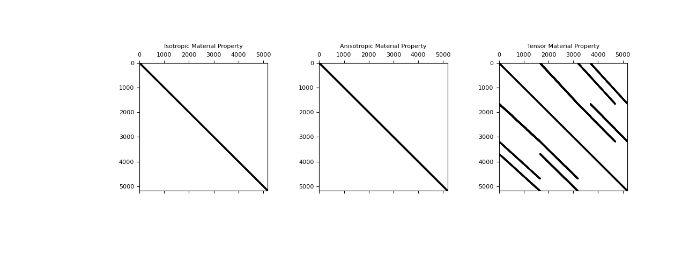

Inner Products#
By using the weak formulation of many of the PDEs in geophysical applications, we can rapidly develop discretizations. Much of this work, however, needs a good understanding of how to approximate inner products on our discretized meshes. We will define the inner product as:
where a and b are either scalars or vectors.
Note
The InnerProducts class is a base class providing inner product matrices for meshes and cannot run on its own.
Example problem for DC resistivity#
We will start with the formulation of the Direct Current (DC) resistivity problem in geophysics.
In the following discretization, \(\sigma\) and \(\phi\) will be discretized on the cell-centers and the flux, \(\vec{j}\), will be on the faces. We will use the weak formulation to discretize the DC resistivity equation.
We can define in weak form by integrating with a general face function \(\vec{f}\):
Here we can integrate the right side by parts,
and rearrange it, and apply the Divergence theorem.
We can then discretize for every cell:
Note
We have discretized the dot product above, but remember that we do not really have a single vector \(\mathbf{J}\), but approximations of \(\vec{j}\) on each face of our cell. In 2D that means 2 approximations of \(\mathbf{J}_x\) and 2 approximations of \(\mathbf{J}_y\). In 3D we also have 2 approximations of \(\mathbf{J}_z\).
Regardless of how we choose to approximate this dot product, we can represent this in vector form (again this is for every cell), and will generalize for the case of anisotropic (tensor) sigma.
We multiply by square-root of volume on each side of the tensor conductivity to keep symmetry in the system. Here \(\mathbf{J}_c\) is the Cartesian \(\mathbf{J}\) (on the faces that we choose to use in our approximation) and must be calculated differently depending on the mesh:
Here the \(i\) index refers to where we choose to approximate this integral, as discussed in the note above. We will approximate this integral by taking the fluxes clustered around every node of the cell, there are 8 combinations in 3D, and 4 in 2D. We will use a projection matrix \(\mathbf{Q}_{(i)}\) to pick the appropriate fluxes. So, now that we have 8 approximations of this integral, we will just take the average. For the TensorMesh, this looks like:
Or, when generalizing to the entire mesh and dropping our general face function:
By defining the faceInnerProduct (8 combinations of fluxes in 3D, 4 in 2D, 2 in 1D) to be:
Where \(d\) is the dimension of the mesh. The \(\mathbf{M}^f\) is returned when given the input of \(\Sigma^{-1}\).
Here each \(\mathbf{P} ~ \in ~ \mathbb{R}^{(d*nC, nF)}\) is a combination of the projection, volume, and any normalization to Cartesian coordinates (where the dot product is well defined):
Note
This is actually completed for each cell in the mesh at the same time, and the full matrices are returned.
If returnP=True is requested in any of these methods the projection matrices are returned as a list ordered by nodes around which the fluxes were approximated:
# In 3D
P = [P000, P100, P010, P110, P001, P101, P011, P111]
# In 2D
P = [P00, P10, P01, P11]
# In 1D
P = [P0, P1]
The derivation for edgeInnerProducts is exactly the same, however, when we
approximate the integral using the fields around each node, the projection
matrices look a bit different because we have 12 edges in 3D instead of just 6
faces. The interface to the code is exactly the same.
Defining Tensor Properties#
For 3D:
Depending on the number of columns (either 1, 3, or 6) of mu, the material property is interpreted as follows:
For 2D:
Depending on the number of columns (either 1, 2, or 3) of mu, the material property is interpreted as follows:
Structure of Matrices#
Both the isotropic, and anisotropic material properties result in a diagonal mass matrix. Which is nice and easy to invert if necessary, however, in the fully anisotropic case which is not aligned with the grid, the matrix is not diagonal. This can be seen for a 3D mesh in the figure below.
import discretize
import numpy as np
import matplotlib.pyplot as plt
mesh = discretize.TensorMesh([10,50,3])
m1 = np.random.rand(mesh.nC)
m2 = np.random.rand(mesh.nC,3)
m3 = np.random.rand(mesh.nC,6)
M = list(range(3))
M[0] = mesh.get_face_inner_product(m1)
M[1] = mesh.get_face_inner_product(m2)
M[2] = mesh.get_face_inner_product(m3)
plt.figure(figsize=(13,5))
for i, lab in enumerate(['Isotropic','Anisotropic','Tensor']):
plt.subplot(131 + i)
plt.spy(M[i],ms=0.5,color='k')
plt.tick_params(axis='both',which='both',labeltop='off',labelleft='off')
plt.title(lab + ' Material Property')
plt.show()
(Source code, png, pdf)
{kind=link}

Taking Derivatives#
We will take the derivative of the fully anisotropic tensor for a 3D mesh, the other cases are easier and will not be discussed here. Let us start with one part of the sum which makes up \(\mathbf{M}^f_\Sigma\) and take the derivative when this is multiplied by some vector \(\mathbf{v}\):
Here we will let \(\mathbf{Pv} = \mathbf{y}\) and \(\mathbf{y}\) will have the form:
Now it is easy to take the derivative with respect to any one of the parameters, for example, \(\frac{\partial}{\partial\boldsymbol{\sigma}_1}\)
Whereas \(\frac{\partial}{\partial\boldsymbol{\sigma}_4}\), for example, is:
These are computed for each of the 8 projections, horizontally concatenated, and returned.